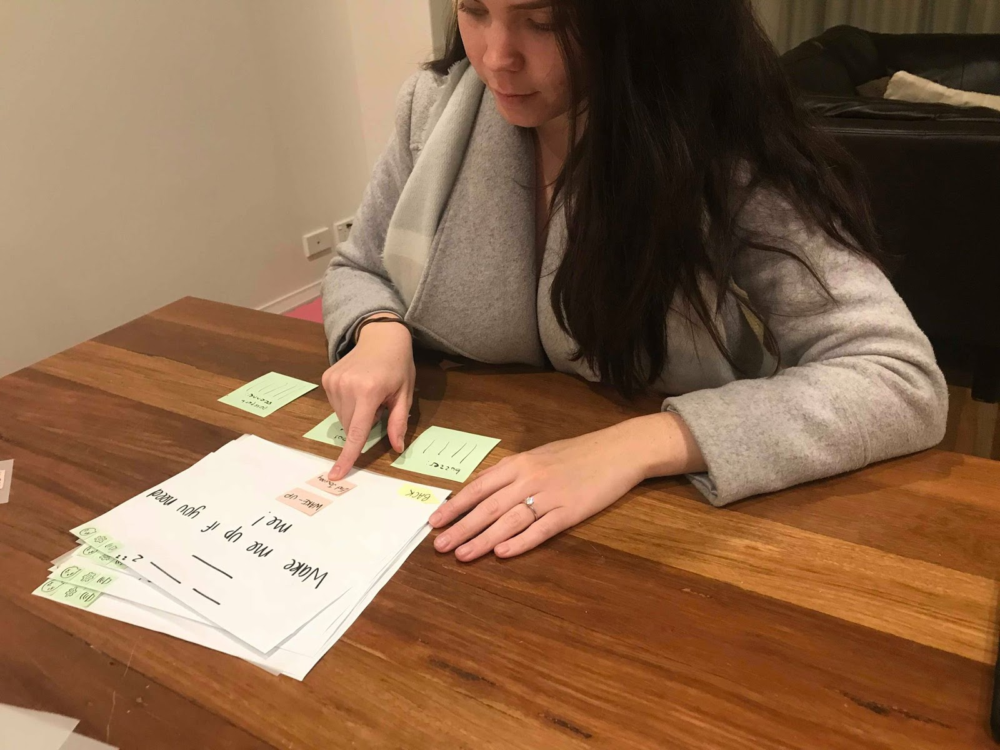

This process journal demonstrates the processes my team and I went through throughout the semester to produce an interactive prototype for the Sydney International Airport. We went through a very iterative design process, trying to find the best possible solution and interface to solve our problem. This process journal explores each stage of that process and highlights our thoughts and user feedback which ultimately defined and shaped our final product.
When researching autonomous vehicles, we wanted to create something that would make people’s lives easier and be helpful on both an individualistic level but also for the larger community. The airport seemed to be an area that met this criteria. Initially, we recognised two main areas in which our autonomous vehicle could potentially aid the airport;
1. Increasing productivity for the traveller when dealing with the extensive security processes
Airports are typically known as a busy, time consuming and overall tedious place to begin an exciting trip. By improving the flow and speed of services within the airport, users could enjoy a higher quality experience overall.
2. Making the event of going to the airport easier and more enjoyable for users
Travelling can be a stressful situation at the best of times. There is an opportunity to incorporate automated technology to make the experience more enjoyable for the user by offering a seamless and easy transition from the beginning of the process to the end.
Through our own experiences and a small amount of secondary research, our problem space was solidified as we found that the airport was a key place where emerging technologies were beginning to be implemented, however not very effectively in some cases.
As soon as we decided that we wanted our focus to be how we can improve the experience within the airport, we began to gather research to validate our decisions. We had to have a strong foundation of both primary and secondary research to build our ideas upon. Secondary research proved to be a good way to understand the general problems that people faced when going to the airport, and was a great starting point in guiding our primary research. Primary research was the most important part of our findings as it helped us discover user needs and therefore define our problem area.
All the secondary research conducted was a great way to empathise with our users, and generaly a good starting point as we began to define our problem space.
To begin our secondary research, we looked at reviews of the Sydney International Airport, posted by users online. Before diving into our own research, we needed to get a better understanding of the problems, people were facing to discover potential problem areas for us to work in. By doing a simple search of social media and a few major review sights such as Yelp and Google Reviews, we discovered a variety of potential problem areas.
To follow up with this, we did some research of what current technologies are being used currently in airports worldwide. We discovered a few cases where automated technology was already beginning to be implemented such as Air Asia's fully automated self-service bag drop system that does not require any assistance from staff.
We also looked at what positive things people were saying about the International Airport so we could see what our users were responding to. We summarised the most important of these findings in the follow two points:
After conducting some research online, predominantly through reviews left on social media and other reveiwing website, we discovered a few consistent themes and isses people were experiencing:
- Google Reviews
Before conducting our primary research, we first developed five key research questions which we aimed to answer through our findings. These research questions helped us define what we should ask our potential users and also which research methodologies would be best to get this information.
What do people like about the service provided at the airport and what are the pain points?
Which areas within the airport have the potential for improvement?
What technology and devices are currently used in the airport to improve the quality of the users’ experience?
How do people feel about technology replacing people?
How does Sydney International Airport compare to other airports in terms of technological advances?
We decided to conduct a semi-structured interview within Sydney International Airport to gain a sense of our target audiences' first-hand experiences in that moment. We believed that an interview would allow us to discover what issues our users' have, but also what is important to them.
Typically, interviews are also a great way to gather qualitative data that can be dissected and analysed to better understand and define a set of user pain points and potential opportunities for development. We believed this data would be one of the most interesting methodologies to analyse and extract user needs from because of the diverse range of experiences and also the opportunity to get an explanation for users' thoughts and feelings.
We also decided to do a semi-structured interview as we realised that although we could go in with a few set questions in mind, each individuals' experiences and stories would prompt more personalised questions which would be beneficial to understand for our research purposes.
Brittany took the lead for this research method where she asked people who were in the check-in area of the airport. Although we went in already cautious about travellers being unwilling to participate in a short interview, it soon became apparent to us that although we chose a very relevant area to do our research, it was also a very busy area where a lot of the people were busy. Nevertheless, we persevered and asked people who we thought were appropriate based on their availability, whether they would be willing to answer a few questions for us.
This research methodology and the consequent data we obtained from answers was very rich in information. It helped me realise the importance of not only conducing interviews to get such a meaty set of data, but conducting these interviews in a relevant environment. By going to the airport and asking people about their experiences right there in the moment, we became aware of so many issues and situations which someone who would solely be reminiscing about would easily miss.
In tandem with the interview method, we decided to conduct a few think-aloud sessions also at the Sydney International Airport to gain more qualitative data. We wanted to understand our users' thoughts and feelings when interacting with the self check-in service to be able to find any pain points and opportunity areas.
Once we reached the airport, we realised it would be quite difficult to conduct the think-aloud method because the environment itself is one that is very rushed. We saw a lot of the people at the airport who looked very stressed or lost. Despite this, Brittany took the lead and asked a few people whether they would be willing to participate. A few people did say they were willing so Brittany conducted these think-aloud sessions with users as they tried to operate the self check-in kiosk.
This data proved to be interesting because many people seemed to be avoiding the use of the self check-in kiosks and when they had to use them, they often looked to the staff for assistance before even beginning.
We thought mapping space would be an interesting methodology to use within the airport. It was a method was have not really explored very much during out degree, but we thought it would give us some interesting knowledge about where people are moving in the space. This involved sketching the movements of both individual people and groups within the space as they entered the airport, found their check-in,, and went further into the next stage of security.
Ludia took the lead on this methodology as she sat in different areas of the airport to see where people are walking within very packed areas and very quiet areas. Whilst observing this, she realised that a lot of people upon entering the airport were very lost in knowing which check-in gate to go to. This was evident by the same people walking up and down the main corridor of check-in several times.
People being unaware of where their check-in gate was, became a key finding with this method. Also, it also became clear that there was some resistance to using the self-service kiosks where a lot of people would approach the kiosk and soon after continue walking. Also, through this methodology we found that the busy check-in terminal became very confusing for our users since they were unsure as to where the lines began and which line they should be joining.
Ludia took the lead in conducting a generative session with around 4-5 people. This session was conducted with student frequent travellers and provided us with a well of qualitative information. In the session, we gave our users two activities to conduct.
"How does your overall experience of the check-in process at the international airport differ from travelling along to travelling with more than one person?"
For this activity we asked our users to place images and words to describe what they liked and disliked about travelling alone and with a group. We found that a lot of people's experiences differed when travelling alone. Although the journey was still exciting, people expressed that it could be lonely. On the other hand though, we also found that a lot of our users got more stressed out when travelling with a group, especially if it is family. This was because certain users felt like they had the responsibility to take care of their parents and make sure everything is in order rather than just relaxing and being able to enjoy the experience.
"How did the overall process at the airport look like from beginning to end? Write and draw out the stages you went though and using the emojis below to describe your feeling of each stage you went through."
For this activity, we gave our users a timeline where they could place words and draw how they during the entire process of going to the airport. From this, we discovered that for majority of our users, the beginning stage of entering the airport was a high and pleasant experience. When asked to explain, we found that this was due to the excitement of going overseas. Soon after that, generally the experiences seemed to drop as people had to wait in long queues and go through several security processes. However, once past the last stage of security and travellers were waiting for their plane to board, this was again a pleasant experience. From this methodology, we found that people generally had negative experiences during the extensive security processes. When considering this data, we thought this section would be an interesting place to target due to the abundant need for a better experience.
We also decided to do contextual observations because we thought this methodology would be very appropriate for the location of our research. People were very busy and preoccupied but being able to sit on the outside of the situation and observe their behaviours, actions and facial expressions, we were able to gather very interesting data. I observed people entering the airport, finding their way to the correct check-in terminal and also their experiences whilst waiting in line until they had finished their check-in process.
We were able to understand how people would interact and navigate through the airport naturally. We were also able to gauge users' feelings and natural inclinations as they wayfind and also go through the process of checking-in. And finally, through contextual observations we managed to gather interesting findings through the reactions of people when interacting with technology (at the self check-in kiosks).
Through contextual observations, we were able to summarise the following six findings:
QUEUES
People seemed stressed and frustrated as they waited in queues that exceeded designated areas. These lines were very disorganised and moved very slowly.
LUGGAGE
People need a better way to weigh and record luggage before approaching the check-in counter to avoid having to reopen luggage and redistribute weight.
COUNTER SERVICE
There was only 5 counters open for service at the busiest terminal. Those who were not checking in any luggage did not stay long at the counter whereas people checking in luggage took a long while.
WAYFINDING
Many people arriving at the airport looked very lost and kept walking back and forth trying to find their check-in counter. Some people looked extremely confused as to their next course of action after self checking in.
STAFF
Staff were readily available to help customers use check-in kiosks, but there were also large amounts of staff that seemed unoccupied.
SELF CHECK-IN
Despite being a self check-in section, people seemed very lost and kept approaching nearby staff for assistance with using the machine. People began lining up behind a staff member who was helping despite many free kiosks.
These findings were very useful for us, because it showed us first hand the main areas which people were experiencing issues with. With this data collected, we would be able to go forward and narrow down which problem area we would like our solution to address. Therefore these findings acted as a catalyst for ideation.
I also drafted and sent out a questionnaire via social media that collected data that would give us a better understanding of users' feelings and thoughts regarding the service within the airport. We decided to do questionnaire as we thought it was a great means for us to reach a wider variety of people to get an overall understanding of people's experiences. Since we conducting this research method using Google Forms, we were able to gather deeper insights into certain demographics and their opinions. And finally, we were able to achieve an understanding of personal preferences regarding human or technological interactional and how this can impact a users' experience, particularly because many people have different attitudes towards emerging technologies.
82% of participants usually travel with more than one person
27 participants rated the ease of the processes within the airport between 3-4 out of 5
63%The responses for this question were largely based around queues within the airport.
We also asked them some open-ended questions to gather some more indepth answers to better understand our users. If there's anything you would change about the service at the international airport, what would it be?
Hiring more staff to make the check-in process more productive and efficient:
However, as seen through the contextual observation performed, there was an abundance of staff in the airport, but they did not seem to be working as efficiently as they could be in regards to managing the long lines of customers. This leads to a comment on effective resource allocation within the airport.
Better organisation of long queues:
This is was also a large issue in the contextual observation as queues began exceeding the designated area and extended into the walkway of the airport, thereby creating a large mess.
The findings from the questionnaire cemented the key problem areas that kept reoccuring in all of our research methods. One thing we learned throughout the process of creating a questionnaire is the fact that to get a good set of results, you must target a large variety of ages. This was one area in which we could have improved and should take into consideration next time. We were unable to get a diverse range of ages and this could have skewed our results because we therefore could not see the insights of people of an older generation.
View the questionnaire here
After doing our secondary research, we needed to identify the potential users for our solution. We based these on current users of similar non-autonomous technologoies worldwide. Our list of people became very broad because of the amount of different people who interact with the airport.
We realised that it could be difficult to design a solution or autonomous vehicle that would cater to the needs of all the potential users listed above. So we would have to make decisions about what we were trying to achieve, who's needs we were trying to solve and from there discover who would be the ones who could potentially benefit from the idea.
Gathering and testing on appropriate users is a very important aspect of conducting user research sessions. Our target audience for FriendBot could be considered quite diverse. We wanted this concept to be valuable for people of all ages and in all different situations. Our core stakeholders included:
Each of us created a few personas based on people the research methdos we looked into. When we brought our research together, we realised that we for the most part found very consistent traits and user needs popping up. Mary-Anne Smith is an example of one of my personas who we kept in mind when making design decisions throughout the process of ideation and tesing.
Mary-Anne is a shy student who lives in Australia. She loves to travel, but has only travelled with other people and is used to having a group with her to ask questions or lead the way.
She considers herself tech-savvy, but she can get extremely overwhelmed and unsure of herself when completing important tasks such as checking in by herself.
Mary-Anne is some-what independent, but sometimes she is too shy to ask staff for help or guidance and therefore it can take her a long time to do a task or get where she needs to go.
Once we collated all our research together and compared all of our findings, we came up with a list of key problem areas and potential opportunities for us to work with.
Obviously many of these specific issues were out of our hands when it came to actually ideating and creating an autonomous vehicle that can be made in the near future. We could not restructure the airport or change the security measures but we did consider trying to make these processes more enjoyable in general.
From these problem areas we started to begin our initial ideations. This included very basic ideas of indoor self driving cars and entertainment delivery vehicles which were not very well thought through or had much direction. The feedback we received from Ashlyn confirmed our theories that these concepts were very preliminary and could be thought out better. Since they lacked depth and seemed as if it was not well thought out, she explained that each concept needed to clearly be backed up by pain points from our research.
She recommended we take a step back and start with writing a problem statement and choose the top three problem areas to create "how might we" questions guide our ideation.
This was a very important learning curve because we all were reminded the importance of planning and taking a step back to structure our thoughts. It was very important to heavily back up our ideas with the research we had spent a long time collecting so that we knew they had validity. It was a good learning moment to understand the importance of certain methods such as the "how might we" since it really helped us define a problem and pushed us forward. The next step for us was to pick the top three issues, create a problem statement and then make "how might we" statements for each.
The Sydney International Airport is a public space that aims to provide fast and efficient service to its yearly 14.9 million passengers.
They strive to create a “more informed journey through technology”, however, our primary research has found that these services are insufficient and tend to result in negative customer experiences.
We discovered through user research that the Sydney International Airport needs to focus on improving service for travellers in the three main areas of wayfinding, providing updates to customers and security.
What do people like about the service provided at the airport and what are the pain points?
Which areas within the airport have the potential for improvement?
What technology and devices are currently used in the airport to improve the quality of the users’ experience?
Through our processes of defining the problem space and creating the "how might we" questions, we were now able to refine our user needs to a definite list of things that we should be trying to target when creating our autonomous vehicle:
 Staff need to be able to complete their required tasks without having to be interrupted by travellers questions that can be avoided.
Staff need to be able to complete their required tasks without having to be interrupted by travellers questions that can be avoided. With our problem space, "how might we" questions, and a clear list of user needs, we were finally ready to begin the next stage of the design process; ideation.
Going into our next stage of the design process, at the beginning we all had to come up the concepts including storyboards and impacted stakeholders. Each concept went through a rigorous process of ideation and improvement as the weeks went on. Eventually we had to cut out the weakest of our ideas so that we could move forward and further develop the other two.
During this process, the need to be creative but also realistic was a very interesting balance. Especially since we chose such a busy problem space it was important that our concepts were creative, leveraged technology, realistic to an extend and met user needs. Despite this, after the first week we all came back with an idea each which we came together as a group to evaluate and further iterate upon.
Lug my Luggage is a vehicle that simplifies and autonomises the check-in process, particularly in the aspect of baggage. This baggage system secures and transports users’ luggage from check-in, directly to the plane to ensure safety and security with baggage handling.
Ludia and I both thought up very similar concepts, so we decided to merge them together and create Lug my Luggage. This concept mainly targeted the issue of security - baggage and addressed the question of: "How might we give travellers peace of mind through baggage monitoring?"
This automated vehicle would secure peoples' luggage and take it to directly to the plane. This concept aimed to help with line management and creating an easier and faster experience for users as they check-in their luggage. At the same time, it aimed to provide a sense of security as they would know that their luggage is safely secured and no one would be able to unlock it expect for them. When thinking of this idea, we imagined the vehicle remaining locked and only it could be unlocked when the user collects their baggage after the flight, using biometric technology.
| CORE | DIRECT | INDIRECT |
|---|---|---|
| Travellers - immigrants, tourists, large groups, parents, young adults, business travellers | Children | Schools and companies sending groups of people overseas |
| Staff - stewardness, security guards and baggage handlers | Sponsors | |
| Airlines | Corporate training |
The follow screens are a brief overview of the interface we originally thought of this vehicle should have. It involved a simple screen on the vehicle as shown above in the storyboard.
Upon discussing this idea a bit more in depth amongst ourselves and with our tutor, we realised some very apparent issues that this vehicle would present. This is summarised in the pros and cons list below. Although this autonomous vehicle seemed like it would make users feel more safe about their luggage, it did bring up issues that the autonomous vehicle would do the opposite and cause users more stress. Also, Ashlyn brought up the idea of practicality within the International Airport of having large numbers of these autonomous vehicles making their way through the airport and also how it would cope with a lot of foot traffic.

At this stage, we really learned the value of evaluation methods, like decision matrices. We developed a set of criteria we wanted our ideal concept to have and weighed up Lug my Luggage against this criteria. As you can see below, the concept didn't do so well. This evaluation method made us drop all our potential biases we may have had or any sort of attachment, and allowed us to impartially decide whether this was a good concept or not. Finally, we agreed that this idea was our weakest and decided to not move forward with it when going into our paper prototyping stage.

naviGATE is an autonomous pod that travels from the security exit to all ends of the airport to deliver passengers to their gates in a safe and timely fashion.
This concept aimed to target our users' issues of needed a better notification system and also finding their way throughout the airport. We believe this concept addressed the questions: "How might we inclusively alert travellers of updates and changes concerning them leading up to their flight?" and "How might we make it easier for travellers to navigate to and through the airport easily, time efficiency and without staff assistance?"
This concept went through a few rounds of iteration since at first we thought we should disregard it, however after further deliberation we decided to enhance it and create paper prototypes for it.
This "train" type of idea is an autonomous vehicle that would pick travllers up from a "stop" and take them to their gate. It would provide users with an easy way to travel to their gate without getting lost. They would simply scan their boarding pass and the "train" would configure a path that would stop by the necessary gates in the most efficient way. This vehicle also incorporates a more personalised notification system in it where, if there is a flight delay or gate change the "train" will have a general announcement, however the affected users would get a notification on their phone alerting them that this notification applies to them. Then through their phone, the would be given the opportunity to stop the "train" at at different location while they wait for their boarding.
| CORE | DIRECT | INDIRECT |
|---|---|---|
| Travellers - immigrants, tourists, parents, children | Other travellers - foot traffic | Airlines |
| Frequent travellers | Owners of the duty free shops | Staff |
The follow screens are a brief overview of the interface we originally thought of this vehicle should have. It involved having a "bus stop" at some point in the airport (not interactive), a place where the user should scan their boarding pass before entering (on the vehicle itself), a large screen within the vehicle and also an interface for the mobile screen (if there were to be a delay).
Ashlyn advised us that we should have solid reasoning behind each aspect of our concept to make sure we were not jumping to conclusions or incorporating unnecessary aspects thereby making the concept as a whole too complex. Therefore, we went through our concepts and created reasons for why each aspect was added, backing it up with what our users found and cutting out unnecessary aspects.
We talked with Ashlyn about this concept and she had very interesting feedback that made us realise that this idea needed quite a bit of changing to actually be useful. Perhaps the novelty of it was good, but once that wears off, it was not a particularly practical nor useful autonomous vehicle. She brought up issues of the train having practicality issues as it would be too big for airport and would not be practical to move in the space with so much other foot traffic.
Another point she brought up was naviGATE not being very useful because if there are problems with boarding, that in itself would create queues, but also it would take too long to get to the users' gate because of all the other passengers on board. "What would be the purpose if the user could walk to the gate in a shorter amount of time?" However, she did say it was a good starting point and just needed some more thought into the practicality of it.

At this point, we saw that this idea was a bit too impractical to work, so we decided to do one of our other concepts (see Concept 3 - FriendBot). However, after we had done paper prototypes for each concept we realised that we needed to bring back naviGATE as a new and improved concept. So we came back to this concept and fixed the aspects that Ashlyn saw we had issues with and decided to test this as one of our final two concepts.

We made quite a few changes to this concept to make it more practical and overall and more personalised experience for our travellers.
The follow screens shows the iterated version of our interface. The interface experience begins on the "Taxi Rank" and shortly after the user is directed to their pod to begin their journey where the rest of the screen interfaces are.
After creating one set of interfaces for our concept, we asked our tutor to review it as a user and find out if there were any issues.
One important thing I did learn from this experience was that if a concept is a lot of work, that's not a reason to disregard it. I think this was a pretty good idea and it shouldn't have been excluded because of the amount of work that had to be done it. I think the work that was done on it was well worth the time. At one point it became one of my favourite concpets.
We briefly discussed our second iteration of naviGATE with out tutor, but out decision was predominantly used by considering the decision matrix. When we compared this concept to our set of criteria, it had quite positive results for a lot of them. so we decided to go ahead with this concept as one of our final two concepts that we would be paper prototyping and testing.
At this stage, we really learned the value of evaluation methods, like decision matrices. We developed a set of criteria we wanted our ideal concept to have and weighed up Lug my Luggage against this criteria. As you can see below, the concept didn't do so well. This evaluation method made us drop all our potential biases we may have had or any sort of attachment, and allowed us to impartially decide whether this was a good concept or not. Finally, we agreed that this idea was our weakest and decided to not move forward with it when going into our paper prototyping stage.

FRIENDBOT is an autonomous robot that greets travellers upon entering the airport and guides them through the airport as well as provides convenient services including food and duty free delivery.
This concept aimed to target our users' issues with notifications and wayfinding throughout the airport. We believe this concept addressed the questions: "How might we inclusively alert travellers of updates and changes concerning them leading up to their flight?" and "How might we make it easier for travellers to navigate to and through the airport easily, time efficiency and without staff assistance?"
This concept also went through a few rounds of iteration during the entire process. It began as a very preliminary idea of having an autonomous entertainment unit that would travel to people stuck waiting in queues. However, it evolved to become a multifaceted bot that targets many of our users needs.
Originally, we thought of this concept as a small robot that users could prebook and then follow through the airport as a wayfinding device. We also wanted to give users a sense of security so they were able to watch over their bags whilst still getting all the services the airpot has to offer. Further, the FriendBot would act as a companion for those travelling alone, which through our research found could be a little lonely. The user would be able to access their purchases via biometric scanning technology as well. At this point, we were looking at only looking at this concept and developing two interfaces for them, so Brittany devloped one interface and Ludia, the other.
| CORE | DIRECT | INDIRECT |
|---|---|---|
| Parents | Other travellers | Companies |
| Individual travellers | Staff | Sponsors |
| Children | Airline | |
| Brands people purchase from in duty free |
We receieved feedback that people would not really be aware of the bot so there would be no reason for them to prebook unless they have interacted with it before. Therefore we introduced a system where people are greeted by a FriendBot upon entering the airport and the user can then choose to dismiss the bot or continue it's service further.
As a team we also discussed the issues of payment of purchases and the incentive for people to stay to collect their purchases if they pay after. We decided to change this feature to make it so the bot will hold the users' payment before it goes to collect purchases.
The follow screens are a brief overview of the interface Brittany developed. It involves a motion sensor to keep track of the users speed of walking. Using biometric data, the bot will learn the users' face and be able to reocgnise the user if they part of if he needs to release a purchase to the correct person.The main difference Brittany's idea provided was the ability to take a screen away to keep the user company as the bot goes away to retrieve their purchases.
Ashlyn advised us that we should have solid reasoning behind each aspect of our concept to make sure we were not jumping to conclusions or incorporating unnecessary aspects thereby making the concept as a whole too complex. Therefore, we went through our concepts and created reasons for why each aspect was added, backing it up with what our users found and cutting out unnecessary aspects.
Ludia also developed a set of user interfaces based on the same concept. Her interfaces slightly differed from Brittany's as it has a mouth interface that would be good for accessibility and also an audio aspect to it. Also, her interface would provide a QR code that could be scanned on her phone to be able to trace where her bot is at that time.
When we came back together and had a talk amongst ourselves and our tutor, we soon realised that both interfaces were extremely similar in their functionality and service. The differences between them were not great enough to be considered two entire concepts. Since we had discovered and thought out the functinality of the FriendBot as a group, it was difficult to think about it from a different angle. At this point, we decided to combine the best of the two concepts and bring back naviGATE as a second concept.
From this, we learned the importance of ideating seperately and coming together to join concepts, thougths and brainstorm. We hit a big bump when we brainstormed the functionality of the FriendBot together and we didn't realise it till we had all done a lot of work.

Above is the pros and cons for the Brittany's interface.

Above is the pros and cons for the Ludia's interface.
We decided to take the best aspects of both concepts and combine them into one, and also try and address the negative aspects of both.

The bot will greet the user upon entering the airpot and guide them through the key processes within the airport. Then once the user reaches their gate, they will be presented with a range of services to occupy their time while waiting for their flight to board.
Sleep Function - The sleep feature was integrated into the final concept as it gave the user the freedom to use the functionality and services that the bot provides at their own leisure.
Passport Data - Uses the data from the passport that is already implemented in the face scanning technology of the airport, to recognise the user and be able to provide services personalised to them and others in their group.
Tracking Device - Uses a type of tracking device buzzer that facilitates the bot in finding the user to deliver their purchases, no matter where the user walks or travels.
The follow screens shows the itegrated version of our interface.
One thing that was solified here was the importance of not getting too attached to a concept. We had to be quite brutal when chopping up ideas and gluing them back together into one coherent concept. There was a lot of similarities but many aspects were done sightly different to each other. So it was important to remain impartial and keep the users and usability of the interface in mind at all times.
As we did for the other two concepts, we determined the validity and usefullness of this concept by using the decision matrix. This concept had the most positive results when being compared to the criteria and others.
We learned the value of ideation at this point in the design process. It had taken us a long time to get to the final interface for FriendBot, but all the iterations and feedback from Ashlyn that we integrated, overall made the FriendBot have a more usable interface compared to the others.

We created paper prototypes for both naviGATE and FriendBot. While making these prototypes, we often asked our tutor to test before we went out to the public. This process gave us wonderful feedback to implement and although it meant we did many many rounds of iterations of the paper prototypes, we were able to develop a high standard of prototypes before we even finalised our interactive prototype. This made it much easier for us in the future, and it was a good experience because although we took more time in the middle of the process, it made the end of the process much easier to because we had fleshed out all possible issues and scenarios.
We gave our users two tasks to complete for the paper prototypes. We then asked our users a few structured question at the end of the process.For this testing, we tried to get users who were young adults and frequent travellers and also parents with children. We had to test 8 participants per concept to be able to get a variety of feedback.
Get to your gate and then watch a movie.
 Teaghan testing the FriendBot paper prototypeGet to your gate and buy a beef burger from Burger King
Kat testing the FriendBot paper prototype
We gathered all the feedback from the paper prototypes and seperated them into different headings so we can see what our users liked about our concept, and what they thought needed clarification or was downright not there. This was very helpful for us in being able to see what needed changes and then later on, evaluating which one had the most positive response from our users.
Concept that encompassed nearly all of the areas addressed in problem statement; wayfinding, notification and entertainment
Decision matrix found that this concept met more of the criteria we were looking for in a successful concept
User testing showed that this concept was good and only needed a few changes to make it great
Users were generally more excited and engaged when interacting with this interface
Three travellers going to the gate. There is no delay.
John testing the friend paper prototypeTwo travellers going to the gate. There has been a delay so they want to/go to the food court.
Mitch testing the naviGATE paper prototypeOur research showed quite promising results for our concept and interactive prototypes. Overall, the feedback was very positive from our users. The interfaces were intuitive, easy to interact with. However, we did uncover a few small aspects that could be changed going forward to improve our interaction even further. Despite this, overall our users were very receptive to our concept and the usability of our interface.
Through observing user testing, this concept was seen more as a convenient solution but not very enjoyable According to the decision matrix, naviGATE did not qualify for as many criteria as the other concept Had major aspects of functionality than needed to be changed to better meet user needs and requirements Different routes going to the same destination was seen as pointless from user testers.
Therefore, from our findings and heuristic evaluations, we found that FriendBot was the better concept to move forward with to medium and high fidelity wireframing.
For our wireframes, our feedback was all generally very very positive. We had very little things that needed to be improved just to increase usability and the interfaces, however the general functionality was good.


When testing our interactive prototypes, we decided to keep a similar structure and approach to our testing of both the paper prototypes and the medium fidelity wireframes. We decided to only do one round of testing for the interactive prototypes because of time restrictions and also the fact that our user testers for the wireframes had very few changes issues. For us, this was a good sign that the concept and usability of the FriendBot interfaces were intuitive.
User testing was an important next step in the prototyping and testing stages on the design process. We needed to see how our potential users would interact and engage with our interactive prototype as it would be the closest to the final product as we can get it at this stage.
For our user testing of the interactive prototype, we decided to employ three different types methods to get the most relevant and rich set of data that we could. These three methods were used in conjunction and helped support and validate each other.
We decided to conduct semi-structured interviews during and after our user testing sessions. We wanted to conduct interviews as it would be a good foundation to get qualitative data from our users so from there, we could extract user needs and frustrations. However, the very structured and organised formation of interviews meant that we wouldn't be able to ask our users questions based on their words and actions. Therefore, we decided that the a semi-structure interview would best suit the function of user testing. We often asked our users more probing or explanatory questions based on the feedback and thoughts they gave us. This was followed by a few set questions to get some concrete quanitative data but also qualtitative data based on users' experiences.
At the end of each user testing session, we asked the following questions to gather specific data:
1. How would you rate the usability on a scale of 1-5? How easy was it to use?
2. Would you actually use this product in a foreign airport and/or local airport?
3. Would you use the product to find your way or for the other services it provides?
4. Were the notifications regarding boarding times helpful in deciding how to spend your time?
5. Did you find the interactions within the prototype (swipes to go back for example) intuitive?
We also decided to utilise the think-aloud method so that we could get a better understanding of our users' thoughts whilst they were performing the tasks we put forward to them. The think-aloud method was good in getting a direct insight into what our users were thinking when they were interacting with our interactive prototype so we could easily tell where points of confusion where and the aspects which they liked.
However, when using the think-aloud method for user testing, it's important to remember that people not always say what they actually think. Therefore we did not solely rely on this method for our user testing research but rather used it in tandem with other methods to support each other and make our findings more valid.
To record our think-aloud findings, we either recorded the session or took notes of the key points the user expressed. We then sifted through the data and organised it into categories of what our users thought was helpful, what was confusing and what was lacking.
The final methodology we used when conducting the user testing sessions for our interactive prototypes was observation. We used observation alongside the think-aloud method since we thought the two methods would particularly validate each other. With the observation method, we watched our users' behaviour and noted down any signs of confusion, hesitation and/or questionning to get the most accurate results from our user testing. By focusing on the actions and facial expressions of the user, we were able to get a better understanding of what they were really feeling in the moment, and were able to compare this data with the think-aloud they were providing as well.
Gathering and testing on appropriate users is a very important aspect of conducting user research sessions. Our target audience for FriendBot could be considered quite diverse. We wanted this concept to be valuable for people of all ages and in all different situations. Our core stakeholders included:
+ Travellers
+ Immigrants
+ Tourists
+ Large groups
+ Parents
+ Young Adults
+ Business Travellers
We tried to test on the people who would be considered a part of our core stakeholders or people we thought would be the most relevant to test on. However, due to the timeline to complete these user tests, we only have the oppotunity to user test the FriendBot interface on three people. Despite this, we gathered valuable information that would help us in our final round of iteration.

Rachel was born in Korea and moved to Australia when she was a baby. Korean is her primary language and the language she is most comfortable with using, although she is proficient in English as well. She travels often with her family of 4, with her last trip being to Asia in 2017/18.

Gloria is a mother of 3 and has 4 grand children. When she does fly, she often travels in a group of 4 with her husband, sister in-law and brother in-law. However, she does not often travel via planes and rather travels via caravan.

Rick has reached an age in his life where he likes to travel when he gets the chance. He is retired and uses his free time taking his wife around Australia. He likes planning trips overseas but unfortunately, he doesn't go as often as he would like. He was born in the Netherlands and often visits places within Australia.

Selena is a person who has travelled a lot internationally including recent trips to America and Asis, and loves the experience. However, she does not necessarily love the experience at the airport. She often gets bored at airports and lost in non-English speaking airports.
After conducting one round of user testing, we decided to collate and implement our feedback and test it on two more participants to see how the implementation of user testing had an impact on the usability of our user interface. These tests underwent the same process and questions as the first round did so we could gather a consistent set of results.

Marco travels internationally very frequently. He is very used to the experience both within the airport and inside the aeroplane with his last trip overseas being in June of 2018 to China and Japan. Despite this, he does not particularly having to fly but he does enjoy the airports particularly for their duty-free shopping.
Jared was born and raised in Sydney and sometimes travels back to the Phillipines to visit his family there. He has not visited the airport in 5 years, but has a lot of experience of travelling with his two younger siblings and parents on family vacations.
Due to the vast size and functionality of our interactive prototype, we decided to give our users two specific tasks to complete as part of the user testing session. We wanted to test the key services provided by the FriendBot since the functionality of these would be a good depiction of the functionality overall since there are some very similar screens. The two tasks we asked our users to perform were generally consistent throughout the different fidelities of prototypes since we wanted to see the areas for improvement in the main areas of wayfinding, food/shopping deliver and entertainment.
User must use the FriendBot to make their way to their check-in counter and then gate. Once the user reaches their gate, they must order food from 'Auver's Cafe'.
**The user will be unaware of a notification that notifies them that they cannot order food because their flight is boarding in 5 minutes. The user must respond to this notification.**
User has to make their way to their check-in counter and then gate using the Friendbot, and then they must watch the movie 'Crazy Rich Asians'.
**The user will be unaware of a notification saying that their flight has been delayed. They should acknowledge this pop-up and can alter their tasks (up the the users discretion)**
Our research showed quite promising results for our concept and interactive prototypes. Overall, the feedback was very positive from our users. The interfaces were intuitive, easy to interact with. However, we did uncover a few small aspects that could be changed going forward to improve our interaction even further. Despite this, overall our users were very receptive to our concept and the usability of our interface.
Majority of the feedback we received from all of our participants were positive. There were many aspects of both the interface and the concept that appealed to them. These are a few of the key points that users unanimously found particularly good and helpful about our interface:
Overall, there weren't many things that confused our users when interacting with our prototype. However, when we asked them questions throughout the test, we realised that a lot of users either did not notice the notification of the delay or did not think it was important to view. From this, we realised what our users were finding confusing, even if they did not explicity realise it themselves:
Throughout our user testing sessions, our users would sometimes point out some sort of functionality that they would like to see implemented in both the bot itself and also the interface. Between our four users, these two problems with the user interface were consistent:
After receiving the feedback from our first round of testing, our next steps in the prototyping and testing stage became evident. We would have to try to address the points of confusion that our users experienced as well as improve the usability of some aspects within the prototype. We made these few changes to the interactive prototype so that we could test a final improved version to a few more users.
1. Red Notification Button
PROBLEM: Our users did not realise the itinerary button change colours or noticed and didn't realise it's importance.
SOLUTION: Our solution to this problem was to introduce a pop-up notification screen instead. This could pop-up at any time, depending on when the information becomes released. The user must acknowledge the notification to close it which ensures they read it before continuing their activity. However, if for some reason they want to revisit the notification, the red alert will remain alert to remind the user that there is some sort of delay.
2. Back Button
PROBLEM: There was no back buttons so that users could have freedom when interacting with the FriendBot.
SOLUTION: Our solution to this problem was to introduce a swipe functionality to the FriendBot where all the user has to do is swipe right to be taken to the previous page. Majority of our users preferred having a the swipe functionality over a button due to the vast presence of this type of functionality in many touch screen interactions such as Facebook. This however, brought up an issue about how the user would know that they could swipe to go back, unless they experimented or accidentally did it. Therefore, we introduced a new screen after the language selection page that would briefly show the user how to swipe. Unfortunately, FramerX, the prototyping tool we used was unable to provide this functionality in our interactive prototypes.
To move forward in the design process, we made the above changes and did two more user testing sessions to get a general idea of how this increased usability and whether there was any other hidden issues with our interactive prototype.
The positive feedback we received from the users in our second round of testing was largely similar to the feedback from our first round. However, there were additions since we had fixed the issues that our users had commonly faced in our first round of testing. Overall, the interaction with the prototype was very positive and the concept was largely well received.
With the two participants in the second round of testing, only one of the users picked up a potential issue with swiping back till Throughout our user testing sessions, our users would sometimes point out some sort of functionality that they would like to see implemented in both the bot itself and also the interface. Between our four users, these two problems with the user interface were consistent:
After incorporting the feedback from the first round of testing, the users from round two had a very positive experience with our interactive prototype. All the major issues had been addressed and our users found it easy to navigate through the interface to achieve their tasks and also browse a little through the available screens. There was only one potential issue that was identified in this final round of user testing.
1. Menu Button
PROBLEM: One of our users was wondering if there was a more efficient way to get back to the menu rather then just continuously swipping back.
SOLUTION: Our solution to this problem is to introduce another swipe function where the user can swipe down on the screen to pull down a few options. On this screen the user can either go to the "Main Menu" that has all the buttons for the services the bot provides, and also there will be a "End Journey" button so that the user can easily terminate their journey at any point after you have reached your gate. To make the user aware as to how this swipe function would work, a new screen will be implemented before the menu screen which will show a short animation.
Have a look at how FriendBot works with this walkthrough video of the main interaction screens.
** Please note that we were unable to upload our FramerX interactive prototype due to the size of the file and also the program's current functionality **